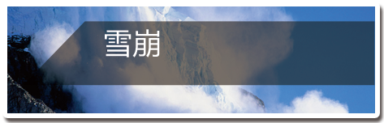

逃生：
1. 判断当时形势。出于本能，会直朝山下跑，但冰雪也向山下崩落。而且时速达到200公里。向下跑反而危险，可能给冰雪埋住。
2. 向旁边跑较为安全，这样，可以避开雪崩，或者能跑到较高的地方。
3. 抛弃身上所有笨重物件，如背包，滑雪板，滑雪杖等。带着这些物件，倘若陷在雪中，活动起来会显得更加困难。
4. 切勿滑雪逃生。不过，如处于雪崩路线的边缘，则可疾驶逃出险境。
5. 如果给雪崩赶上，无法摆脱，切记闭口屏息，以免冰雪涌入咽喉和肺部引致窒息。
6. 抓紧山坡旁任何稳固的东西，如矗立的岩石之类。即使有一阵子陷入其中，但冰雪终究会泻完，那时便可脱险了
7. 如果给冲下山坡，要尽力爬上雪堆表面，同时以俯泳，仰泳或狗爬法逆流而上，逃向雪流的边缘。
8. 逆流而上时，也许要用双手挡住石头和冰块，但一定要设法爬上雪堆表面。